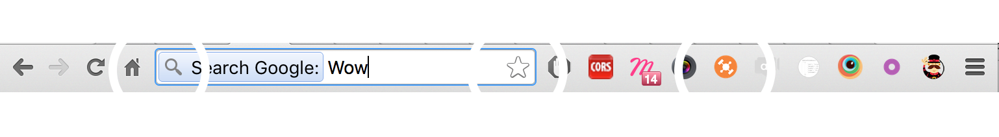

Créer une extension Chrome
Parceque Github c'est pas parfait...
Qui suis-je ?
- Romain DARY
- Développeur / Lead Technique / Entrepreneur @eoko
- Vous pouvez me retrouver
- par email : romain.dary@eoko.fr
- sur twitter (parfois) : @iam_merlin
- sur github : iam-merlin ou eoko
Newbie time!
"Une extension, c'est le truc dans ton navigateur Chrome qui te sauve la vie, te la simplifie ou te la pourrit."Une extension Chrome peut...
- Enrichir l'interface du navigateur
- Ajouter du contenu dans les pages web
- Tourner en tâche de fond
- Améliorer des pages Chrome
- Ajouter des raccourcis claviers
- Bloquer des requêtes
- ...
Et il fait la vaisselle!
Enfin presque... ok next
Quelques Exemples
AdBlock
#P0rn Killer
- Nettoie ta page de toute publicité
- Filtre les requêtes
- Affiche des statistiques
- Permet de controller l'activité de l'extension
Muzli
Le bol de céréales
- Notifie quand il y a de nouvelles suggestions
- Modifie la page "new_tab" de Chrome
Thiveo
Une application professionelle
- Récupère des profils Linkedin
- Synchronise les données avec un serveur
Anatomie d'une extension
- Un fichier de configuration `manifest.json`
- Des fichiers `html`
- De la Magie `js`
- Et du style `css`
... en résumé, on retrouve dans une extension la boîte à outils du développeur Web
Manifest.json
Toute extension Chrome a un manifest
- Web App Manifest : W3C Working Draft
- Google Developer : Manifest File Format
Le manifest permet de définir l'interaction du code de votre extension avec Chrome
- Browser Action
- Page Action
- Popup
- Background
- Content-Script
- Option

Chrome se charge de la sécurité
Ex: Il est impossible qu'un lien sur un site web ouvre votre application
chrome-extension://apekdlngipnjcahnnimkkadmeaiaehng/options.htmlAprès faut pas pousser mémé dans les orties
Rentrons dans le concret*
Chrome Storage
Les données peuvent être stockées localement
chrome.storage.local.set({'value': theValue}, function() {
message('Settings saved');
});
Les données peuvent être partagées
chrome.storage.sync.set({'value': theValue}, function() {
message('Settings saved');
});
Chrome Message
La discussion se fait essentiellement par le biais de messages
Envoi d'un message
chrome.runtime.sendMessage(msg);
Écoute des messages
chrome.runtime.onMessage.addListener(function (msg) {
console.log(msg)
});
Envoi d'un message à un onglet ouvert
chrome.tabs.query({active: true, currentWindow: true}, function (tabs) {
chrome.tabs.sendMessage(tabs[0].id, msg);
});
Modifier un badge
chrome.browserAction.setBadgeText(string)
Industrialiser
Avec Travis
Packager l'application
Pas de bras, pas de chocolat
Avec Chrome

Avec oncletom
$ npm install crx -g
$ crx pack dist -o myextension.crx
$ crx pack dist -o myextension.crx -p privateKey.pem
Créer des versions Github avec Travis
language: node_js
node_js:
- '5'
env:
- CXX=g++-4.8
before_script:
- npm install -g bower
- npm install -g gulp
- npm install -g crx
- npm install
- bower install
before_deploy:
- export RELEASE_PKG_FILE="${TRAVIS_BRANCH}.crx"
- "./node_modules/gulp/bin/gulp.js build"
- crx pack dist -o ${RELEASE_PKG_FILE}
- tar -zcvf ${RELEASE_PKG_FILE}.tar.gz dist
- echo "deploying ${RELEASE_PKG_FILE} to GitHub releases"
deploy:
provider: releases
api_key:
secure: GjCZYTUy2rqmw9CneH1CDwaRWCEIha6oHob+YAM3lb0rvuV9/OtHYYH4D4qFlUX0hT2gEVwV3MBgSra4Tt90930n96W1rMnAwB/Un0uRNUevxjbCiPiuw1c4TCR0OpfBNde2yY7tqVzZBccNElJVIm4/TJ7DnxrNOZJQqjZmOyRy3GPd6U7m0mvDELid9hRbhVDPEjq3yvFcTq+8X6mNAXW6RvTKPUbNOuFbJ0CpMREGi1y7QSlxJXy9yCSZYMatHRrOsk38ZjmYzYTsHsU86PrEqiKoB+Se7WTRL3H3hkGhubJlH7cw6LF6LSfI5lt+STnaI02V39EO1ilnmi7vc08J95cDwgy4n2ww9W3iAtgqADVpsTy0VKIQwEBKqDxjDWd/ZtIFWxNXVDi3k7A5e/RLakr6Urj/oGDcvEDjYewQ4Eja9bNqFT19gWu1yUc6qr2B7HINhdkdApDuBdctpGxou2PnJZ/Dvbx61RbH1xBtVRaUVbmqU3jTzp2R9DtaF6tfr+W8i9JNb9ikspGzJW51iZXW12bTLM89XpRKpapPyqNNuaT8BaWWnJ8PRBTHjLJav/b/ptvTWlbNAUJXKJbNOeQN+kXosdhRy/UgerLSNzku6Lpney+f180BUxr3/cPGmTxLkp0vV67z2QnrRcWd3k6+W1uEbs3pjhKJcQw=
file:
- "${RELEASE_PKG_FILE}"
- "${RELEASE_PKG_FILE}.tar.gz"
on:
repo: eoko/Github-Extension
tags: true
Quickstart a project
Yo man!
Création d'un nouveau projet
Avec Yeoman & generator-chrome-extension
# On s'assure qu'on a ce qu'il faut dans le ventre
$ npm install --global yo gulp bower
# On installe le générateur
$ npm install -g generator-chrome-extension
# On crée le répertoire du projet
$ mkdir my-new-chrome-extension && cd $_
# On génère notre projet
$ yo chrome-extension --no-babel --sass
# On Développe !
$ gulp watch
# On Build notre extension
$ gulp build
gulp watch
Ce projet est "awesome"!
14 lignes de code
var LIVERELOAD_HOST = 'localhost:';
var LIVERELOAD_PORT = 35729;
var connection = new WebSocket('ws://' + LIVERELOAD_HOST + LIVERELOAD_PORT + '/livereload');
connection.onerror = function (error) {
console.log('reload connection got error:', error);
};
connection.onmessage = function (e) {
if (e.data) {
var data = JSON.parse(e.data);
if (data && data.command === 'reload') {
chrome.runtime.reload();
}
}
};
Ou vous pouvez copier/coller cela dans votre projet
Ou intégrer `chrome.runtime.reload()`
dans votre processus de build !
Conclusion
Les extensions sont
- Simples
- Riches en possibilités
- Designé pour les webdevelopers
Merci :)
Pour finir un peu de pub..
on recherche 2 développeurs @eoko
- Lead Développeur PHP/JS
- Développeur PHP/JS fullstack
Ça ce passe par ici